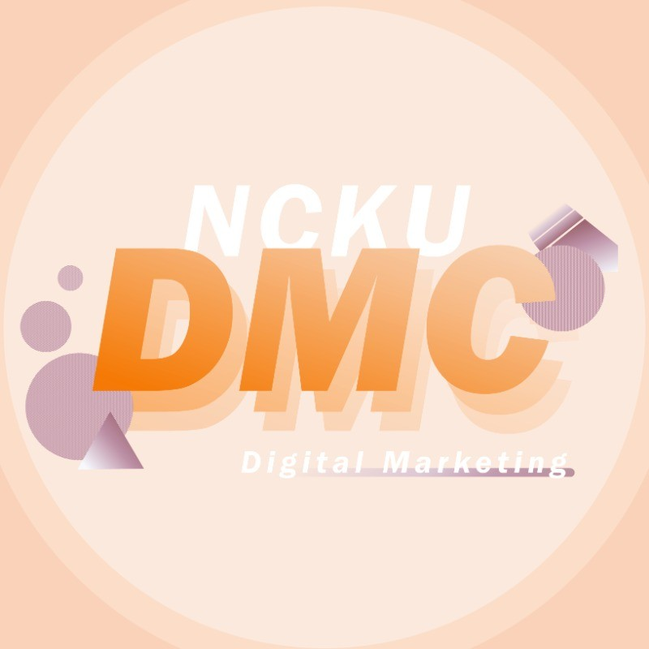

成功大學 數位行銷社
專案生社員

1. 於社團期間學習Google Ads、Google Analytics、文案設計...等課程，並有操作能力
2. 未來希望建立個人品牌自媒體帳號
3. 參與社團內「你所知道的...成大」reels專案，負責企劃發想、攝影與剪輯
1. 於社團期間學習Google Ads、Google Analytics、文案設計...等課程，並有操作能力
2. 未來希望建立個人品牌自媒體帳號
3. 參與社團內「你所知道的...成大」reels專案，負責企劃發想、攝影與剪輯
政治大學 商業分析社
專案生社員

1. 於社團期間學習python、Excel、Tableau…等工具，並能熟悉使用
2. 參與跨國電商平台虛擬專案，過程中使用python進行EDA
針對資料集發掘銷售趨勢以及消費者概況，並利用Tableau進行資料視覺化
3. 針對電商平台進行策略規劃，並提出RFM分群以及物流相關策略來提升營收